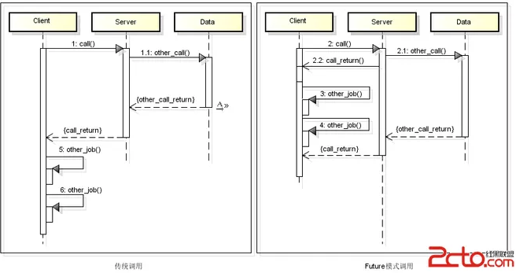

1. Future模式
1.1 Future模式核心思想
Future模式的核心在于去除主函数的等待时间，并使得原本需要等待的时间段可以用于处理其他的业务逻辑。
Future模式类似于商品订单。在网上购物，提交订单之后需要在家等待，并且可以做其他的事情。在程序设计中，当请求提交的时候，期望得到答案时，如果这个答复很慢，传统的是一直等待这个答复之后在去做别的事情，如果利用Future设计模式就无需等待答复的到来，在等待答复的过程中可以做其他的事情。
如下面的时序图所示：

1.2 代码：
Client：
public class Client { public Data request(final String string) { final FutureData futureData = new FutureData(); new Thread(new Runnable() { @Override public void run() { //RealData的构建很慢，所以放在单独的线程中运行 RealData realData = new RealData(string); futureData.setRealData(realData); } }).start(); return futureData; //先直接返回FutureData } }Data：
public interface Data { String getResult() throws InterruptedException; }FutureData:
public class FutureData implements Data{ private RealData realData; private boolean isReady = false; public RealData getRealData() { return realData; } public synchronized void setRealData(RealData realData) { if (isReady){ return; } this.realData = realData; isReady = true; notifyAll(); } @Override public synchronized String getResult() throws InterruptedException { if (!isReady){ wait(); } return realData.getResult(); } }RealData:
public class RealData implements Data{ private String data; public RealData(String data) { try { Thread.sleep(1000); } catch (InterruptedException e) { e.printStackTrace(); } this.data = data; } @Override public String getResult() throws InterruptedException { return this.data; } }Main:
public class Main { public static void main(String[] args) throws InterruptedException { Client client = new Client(); //这里会立即返回，因为获取的是FutureData，而非RealData Data data = client.request("name"); //这里可以用一个sleep代替对其他业务逻辑的处理 //在处理这些业务逻辑过程中，RealData也正在创建，从而充分了利用等待时间 // Thread.sleep(2000); //使用真实数据 System.out.println("数据="+data.getResult()); } }
2. Master-Worker模式
2.1 概念
- Master-Worker模式是常用的并行计算模式。它的核心思想就是系统由两类进行协同工作：Master进程和Worker进程。Master负责接收和分配任务，Worker负责处理子任务。当各个Worker子进程处理完成之后，会将结果返回给Master，由Master做归纳和总结。
- 优点：
- 将一个大的任务分解成为若干个小任务，并行执行，从而提高系统吞吐量。
2.2 代码
Task
public class Task { private int id; private String name; private long price; public Task() { } public Task(int id, String name, long price) { this.id = id; this.name = name; this.price = price; } public int getId() { return id; } public void setId(int id) { this.id = id; } public String getName() { return name; } public void setName(String name) { this.name = name; } public long getPrice() { return price; } public void setPrice(long price) { this.price = price; } }Work
public class Work implements Runnable{ private ConcurrentLinkedDeque<Task> workQueue; private ConcurrentHashMap<String,Object> resultMap; @Override public void run() { while (true){ Task input = this.workQueue.poll(); if (input == null){ break; } //处理任务 Object result = handle(input); this.resultMap.put(Integer.toString(input.getId()), result); } } private Object handle(Task task) { try { Thread.sleep(500); } catch (InterruptedException e) { e.printStackTrace(); } return task.getPrice(); } public void setWorkQueue(ConcurrentLinkedDeque<Task> workQueue) { this.workQueue = workQueue; } public void setResultMap(ConcurrentHashMap<String,Object> resultMap){ this.resultMap = resultMap; } }Master
}
/**
* 用于分配任务
* 收集结果集
*/
public class Master {
//1. 装配任务的集合
private ConcurrentLinkedDeque<Task> workQueue = new ConcurrentLinkedDeque<Task>();
//2. 装配work
private HashMap<String , Thread> works = new HashMap<>();
//3. 装配结果集
private ConcurrentHashMap<String, Object> resultsMap = new ConcurrentHashMap<>();
//4. 构造方法
public Master(Work work, int countWork) {
work.setWorkQueue(this.workQueue);
work.setResultMap(this.resultsMap);
for (int i=0; i<countWork; i++){
this.works.put("子节点"+Integer.valueOf(i), new Thread(work));
}
}
//5. 提交任务
public void submmit(Task task){
this.workQueue.add(task);
}
//6. 执行
public void executeWork(){
for(Map.Entry<String , Thread> me :this.works.entrySet()){
me.getValue().start();
}
}
public Object getResut(){
long result = 0;
for (Map.Entry<String, Object> me:resultsMap.entrySet()){
result += (Long)me.getValue();
}
return result;
}
public boolean isComplete() {
for (Map.Entry<String, Thread> me:works.entrySet()){
if (me.getValue().getState() != Thread.State.TERMINATED){
return false;
}
}
return true;
}
}
Client
public class Client { public static void main(String[] args){ Work work = new Work(); Master master = new Master(work, 10); Random random = new Random(); for (int i=0;i<10;i++){ Task task = new Task(i, "task"+i, random.nextLong()); master.submmit(task); } master.executeWork(); long startTime = System.currentTimeMillis(); while (true){ if(master.isComplete()){ long runTime = System.currentTimeMillis()-startTime; Object ret = master.getResut(); System.out.println("结果："+ret+" 运行时间： "+runTime); break; } } } }